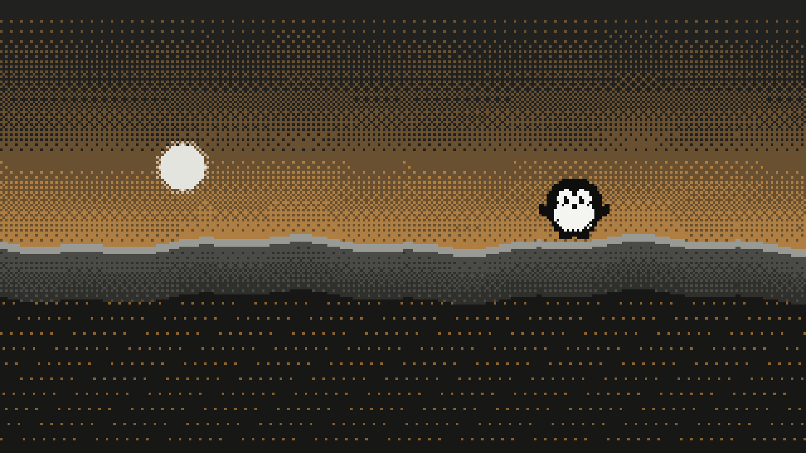
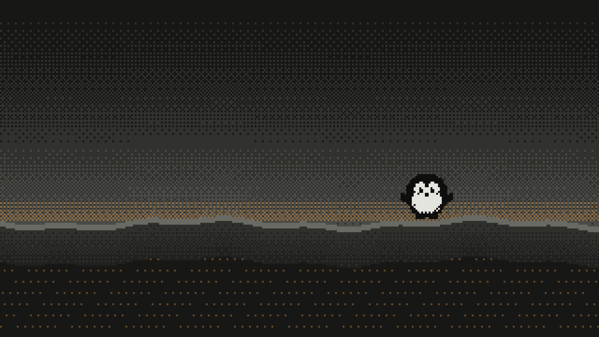
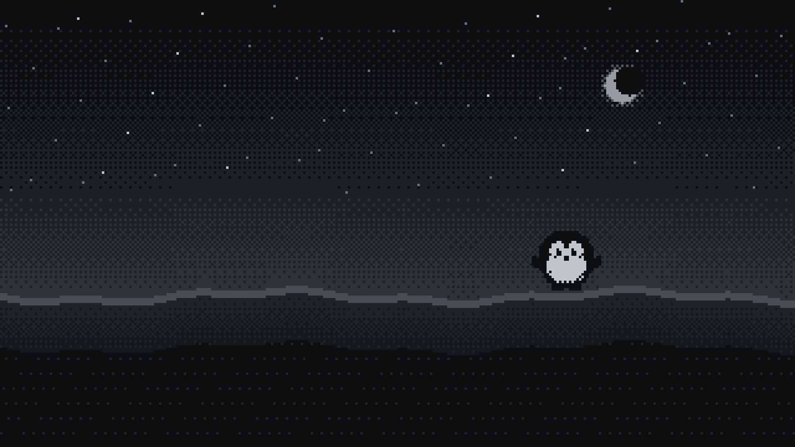

07:42
Fredag 6. november
- NRKStengt E6 ved Dovre etter snøfall
- NRKStrømprisen stiger igjen i Sør-Norge
- RuterBuss 20 går om fire minutter
Bruke bildet som bakgrunn?
4° lett regn
Bluesound: Kjøkken
Farger
| Navn | Mørk | Lys |
|---|
Gråskala
| Token | Verdi | E-ink |
|---|
Skrift
07:42
4° lett regn
Buss 20 går om fire minutter.
Oppdatert 07:40
Pingvin
TV



Filer
| Web | build/web/tokens.css |
| WaddleOS | build/waddleos/WaddleTokens.h |
| TV | build/cleanyourtv/waddle |
| Hyprland | build/hyprland/waddle.conf |
| Waybar | build/waybar/style.css |
| AI | skill/design-arne/SKILL.md |